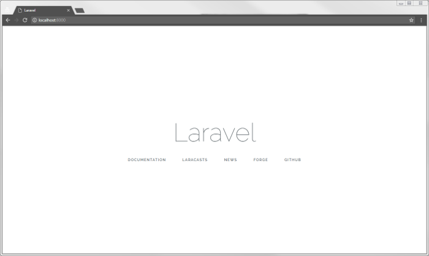
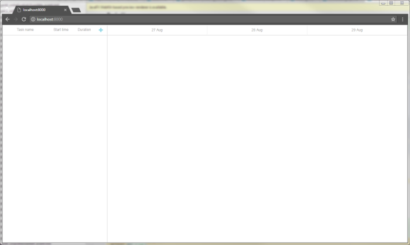
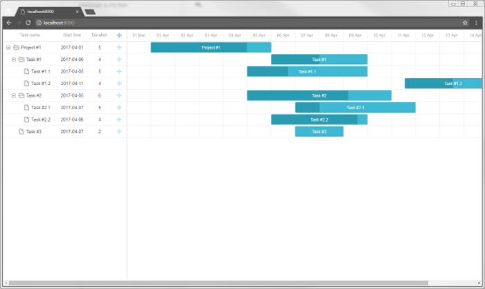
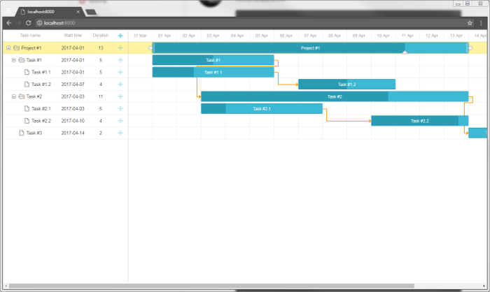

This tutorial describes how to add dhtmlxGantt into a Laravel app.
There are tutorials intended for building server-side integration with the help of other platforms:
The complete source code is available on GitHub.
You can have a look at the video guide that shows how to create a Gantt chart using PHP Laravel.
Create a new application using Composer:
composer create-project laravel/laravel gantt-laravel-app
It should take a minute to download and create all necessary files. Once everything is done, you can check that everything is correct so far:
cd gantt-laravel-app
php artisan serve
At this step you should get a default Laravel page:

Firstly, we'll add a new page with dhtmlxGantt to our app. Go to the resources/views folder and create a new view named gantt.blade.php:
resources/views/gantt.blade.php
<!DOCTYPE html>
<head>
<meta http-equiv="Content-type" content="text/html; charset=utf-8">
<script src="https://cdn.dhtmlx.com/gantt/edge/dhtmlxgantt.js"></script>
<link href="https://cdn.dhtmlx.com/gantt/edge/dhtmlxgantt.css" rel="stylesheet">
<style type="text/css"> html, body{
height:100%;
padding:0px;
margin:0px;
overflow: hidden;
}
</style>
</head>
<body>
<div id="gantt_here" style='width:100%; height:100%;'></div>
<script type="text/javascript"> gantt.init("gantt_here");
</script>
</body>
Here we've defined a simple HTML layout, added sources of dhtmlxGantt from CDN and initialized gantt using the init method.
Note that we've also specified 100% height for the document body and for the gantt container. Gantt will use the size of its container, so some initial sizes are required.
After we've added a new page, we need to make it accessible from a browser. For this tutorial, we'll make our gantt the default page of an app.
Go to routes/web.php and change the default route:
routes/web.php
<?php
Route::get('/', function () {
return view('gantt');
});
Run the app again to make sure it did the trick:

So, we've got an empty gantt chart. Let's connect it to the database and populate it with data.
Be sure to update database configuration in .env, for example:
.env
DB_CONNECTION=mysql
DB_HOST=127.0.0.1
DB_PORT=3306
DB_DATABASE=gantt-test
DB_USERNAME=root
DB_PASSWORD=
The next step is to create model classes and migrations. You can generate classes and migration files using the Artisan command:
php artisan make:model Task --migration
and
php artisan make:model Link --migration
After that find the migrations in the database/migrations folder and define a database schema.
You can find the database schema expected by the gantt here.
The code for the Tasks table looks like this:
database/migrations/_create_tasks_table.php
<?php
use Illuminate\Support\Facades\Schema;
use Illuminate\Database\Schema\Blueprint;
use Illuminate\Database\Migrations\Migration;
class CreateTasksTable extends Migration
{
public function up()
{
Schema::create('tasks', function (Blueprint $table){
$table->increments('id');
$table->string('text');
$table->integer('duration');
$table->float('progress');
$table->dateTime('start_date');
$table->integer('parent');
$table->timestamps();
});
}
public function down()
{
Schema::dropIfExists('tasks');
}
}
Below you will find the code for the Links table:
database/migrations/_create_links_table.php
<?php
use Illuminate\Support\Facades\Schema;
use Illuminate\Database\Schema\Blueprint;
use Illuminate\Database\Migrations\Migration;
class CreateLinksTable extends Migration
{
public function up()
{
Schema::create('links', function (Blueprint $table) {
$table->increments('id');
$table->string('type');
$table->integer('source');
$table->integer('target');
$table->timestamps();
});
}
public function down()
{
Schema::dropIfExists('links');
}
}
And run the migration:
php artisan migrate
While we're at it, we can generate some test data for our app. Generate a seeder class using the artisan command:
php artisan make:seeder TasksTableSeeder
php artisan make:seeder LinksTableSeeder
Add some data to TasksTableSeeder:
database/seeds/TasksTableSeeder.php
<?php
use Illuminate\Database\Seeder;
class TasksTableSeeder extends Seeder
{
public function run()
{
DB::table('tasks')->insert([
['id'=>1, 'text'=>'Project #1', 'start_date'=>'2017-04-01 00:00:00',
'duration'=>5, 'progress'=>0.8, 'parent'=>0],
['id'=>2, 'text'=>'Task #1', 'start_date'=>'2017-04-06 00:00:00',
'duration'=>4, 'progress'=>0.5, 'parent'=>1],
['id'=>3, 'text'=>'Task #2', 'start_date'=>'2017-04-05 00:00:00',
'duration'=>6, 'progress'=>0.7, 'parent'=>1],
['id'=>4, 'text'=>'Task #3', 'start_date'=>'2017-04-07 00:00:00',
'duration'=>2, 'progress'=>0, 'parent'=>1],
['id'=>5, 'text'=>'Task #1.1', 'start_date'=>'2017-04-05 00:00:00',
'duration'=>5, 'progress'=>0.34, 'parent'=>2],
['id'=>6, 'text'=>'Task #1.2', 'start_date'=>'2017-04-11 00:00:00',
'duration'=>4, 'progress'=>0.5, 'parent'=>2],
['id'=>7, 'text'=>'Task #2.1', 'start_date'=>'2017-04-07 00:00:00',
'duration'=>5, 'progress'=>0.2, 'parent'=>3],
['id'=>8, 'text'=>'Task #2.2', 'start_date'=>'2017-04-06 00:00:00',
'duration'=>4, 'progress'=>0.9, 'parent'=>3]
]);
}
}
And call table seeders from DatabaseSeeder.php:
database/seeds/DatabaseSeeder.php
<?php
use Illuminate\Database\Seeder;
class DatabaseSeeder extends Seeder
{
public function run()
{
$this->call(TasksTableSeeder::class);
$this->call(LinksTableSeeder::class);
}
}
After that we can seed our database from the command line:
php artisan db:seedThe data is managed via the Eloquent model classes. We've already generated classes for tasks and links at the previous step. They are ready to use and don't require any changes to work with gantt.
What we can do, however, is to add an open attribute of the Task class to JSON response. It will make the project tree expanded when tasks are loaded to the client side. Otherwise, all branches would be closed initially:
The Task model will look as in:
/app/Task.php
<?php
namespace App;
use Illuminate\Database\Eloquent\Model;
class Task extends Model
{
protected $appends = ["open"];
public function getOpenAttribute(){ return true; }}
And the Link model doesn't need any changes:
/app/Link.php
<?php
namespace App;
use Illuminate\Database\Eloquent\Model;
class Link extends Model
{
}
Once the database is created and the models are defined, we can load data into our gantt. The client side requires dates of the following format, so let's create a controller with an action that produces such JSON:
app/Http/Controllers/GanttController.php
<?php
namespace App\Http\Controllers;
use App\Task;
use App\Link;
class GanttController extends Controller
{
public function get(){
$tasks = new Task();
$links = new Link();
return response()->json([
"data" => $tasks->all(),
"links" => $links->all()
]);
}
}
And register a route, so the client could call this action. Note that we'll add the route to the api.php routes file:
routes/api.php
<?php
use Illuminate\Http\Request;
Route::get('/data', 'GanttController@get');
And finally, call this action from the view:
resources/views/gantt.blade.php
gantt.config.date_format = "%Y-%m-%d %H:%i:%s";
gantt.init("gantt_here");
gantt.load("/api/data");
gantt.load sends an AJAX request to the specified URL and will expect a JSON response as we've defined before.
Also, note that we've specified the date_format value. This is how we tell the gantt which format of dates the data source will use, so the client side could parse them.
If you check the app now, you should see that there are now tasks in our gantt chart:

For now, our gantt can read data from the backend. Let's make it write changes back to the database.
The client side will work in the REST mode, meaning that it will send POST/PUT/DELETE requests for tasks and links actions. You can find the format of requests and all the routes the gantt will use here.
What we need now is to define controllers that handle actions on both models, create routes for them and enable data saving on the client side.
Let's start with controllers. We'll create one RESTful resource controller for each model. It will contain methods for adding/deleting and updating the model.
app/Http/Controllers/TaskController.php
<?php
namespace App\Http\Controllers;
use Illuminate\Http\Request;
use App\Task;
class TaskController extends Controller
{
public function store(Request $request){
$task = new Task();
$task->text = $request->text;
$task->start_date = $request->start_date;
$task->duration = $request->duration;
$task->progress = $request->has("progress") ? $request->progress : 0;
$task->parent = $request->parent;
$task->save();
return response()->json([
"action"=> "inserted",
"tid" => $task->id
]);
}
public function update($id, Request $request){
$task = Task::find($id);
$task->text = $request->text;
$task->start_date = $request->start_date;
$task->duration = $request->duration;
$task->progress = $request->has("progress") ? $request->progress : 0;
$task->parent = $request->parent;
$task->save();
return response()->json([
"action"=> "updated"
]);
}
public function destroy($id){
$task = Task::find($id);
$task->delete();
return response()->json([
"action"=> "deleted"
]);
}
}
And a route for it:
routes/api.php
<?php
use Illuminate\Http\Request;
Route::get('/data', 'GanttController@get');
Route::resource('task', 'TaskController');
A couple of notes regarding this code:
Now let's implement the same for a LinkController.
app/Http/Controllers/LinkController.php
<?php
namespace App\Http\Controllers;
use Illuminate\Http\Request;
use App\Link;
class LinkController extends Controller
{
public function store(Request $request){
$link = new Link();
$link->type = $request->type;
$link->source = $request->source;
$link->target = $request->target;
$link->save();
return response()->json([
"action"=> "inserted",
"tid" => $link->id
]);
}
public function update($id, Request $request){
$link = Link::find($id);
$link->type = $request->type;
$link->source = $request->source;
$link->target = $request->target;
$link->save();
return response()->json([
"action"=> "updated"
]);
}
public function destroy($id){
$link = Link::find($id);
$link->delete();
return response()->json([
"action"=> "deleted"
]);
}
}
And its routes:
routes/api.php
<?php
use Illuminate\Http\Request;
Route::get('/data', 'GanttController@get');
Route::resource('task', 'TaskController');
Route::resource('link', 'LinkController');
Finally, we will configure the client side to utilize the API we've just implemented:
resources/views/gantt.blade.php
gantt.config.date_format = "%Y-%m-%d %H:%i:%s";
gantt.init("gantt_here");
gantt.load("/api/data");
var dp = new gantt.dataProcessor("/api");dp.init(gantt);dp.setTransactionMode("REST");
Now you have a fully interactive Gantt chart with the ability to view, add, update and delete tasks and links.

Please check more of our guides for more features of dhtmlxGantt.
The client-side gantt allows reordering tasks using drag and drop. So if you use this feature, you'll have to store this order in the database. You can check the common description here.
Let's now add this feature to our app.
Firstly, we need to allow users to change task order in the UI. Open the Index view and update the configuration of gantt:
resources/views/gantt.blade.php
gantt.config.order_branch = true;gantt.config.order_branch_free = true;
gantt.init("gantt_here");
Now, let's reflect these changes on the backend. We are going to store the order in the column named "sortorder"." A complete tasks' schema may look as follows:
Schema::create('tasks', function (Blueprint $table){
$table->increments('id');
$table->string('text');
$table->integer('duration');
$table->float('progress');
$table->dateTime('start_date');
$table->integer('parent');
$table->integer('sortorder')->default(0);
$table->timestamps();
});
Or you can add a migration to the schema we've generated earlier:
php artisan make:migration add_sortorder_to_tasks_table --table=tasks
The code of the Migration file is:
database/migrations/_add_sortorder_to_tasks_table.php
<?php
use Illuminate\Support\Facades\Schema;
use Illuminate\Database\Schema\Blueprint;
use Illuminate\Database\Migrations\Migration;
class AddSortorderToTasksTable extends Migration
{
public function up()
{
Schema::table('tasks', function (Blueprint $table) {
$table->integer('sortorder')->default(0);
});
}
public function down()
{
Schema::table('tasks', function (Blueprint $table) {
$table->dropColumn('sortorder');
});
}
}
And apply the migration:
php artisan migrate
After that we need to update CRUD defined in our controllers.
1 . GET /data must return tasks ordered by the sortorder column:
app/Http/Controllers/GanttController.php
<?php
namespace App\Http\Controllers;
use App\Task;
use App\Link;
class GanttController extends Controller
{
public function get(){
$tasks = new Task();
$links = new Link();
return response()->json([
"data" => $tasks->orderBy('sortorder')->get(), "links" => $links->all()
]);
}
}
2 . Newly added tasks must receive the initial value sortorder:
app/Http/Controllers/TaskController.php
public function store(Request $request){
$task = new Task();
$task->text = $request->text;
$task->start_date = $request->start_date;
$task->duration = $request->duration;
$task->progress = $request->has("progress") ? $request->progress : 0;
$task->parent = $request->parent;
$task->sortorder = Task::max("sortorder") + 1;
$task->save();
return response()->json([
"action"=> "inserted",
"tid" => $task->id
]);
}
3 . Finally, when a user reorders tasks, task orders must be updated:
app/Http/Controllers/TaskController.php
public function update($id, Request $request){
$task = Task::find($id);
$task->text = $request->text;
$task->start_date = $request->start_date;
$task->duration = $request->duration;
$task->progress = $request->has("progress") ? $request->progress : 0;
$task->parent = $request->parent;
$task->save();
if($request->has("target")){ $this->updateOrder($id, $request->target); }
return response()->json([
"action"=> "updated"
]);
}
private function updateOrder($taskId, $target){
$nextTask = false;
$targetId = $target;
if(strpos($target, "next:") === 0){
$targetId = substr($target, strlen("next:"));
$nextTask = true;
}
if($targetId == "null")
return;
$targetOrder = Task::find($targetId)->sortorder;
if($nextTask)
$targetOrder++;
Task::where("sortorder", ">=", $targetOrder)->increment("sortorder");
$updatedTask = Task::find($taskId);
$updatedTask->sortorder = $targetOrder;
$updatedTask->save();
}
Gantt doesn't provide any means of preventing an application from various threats, such as SQL injections or XSS and CSRF attacks. It is important that responsibility for keeping an application safe is on the developers implementing the backend. Read the details in the corresponding article.
In case you've completed the above steps to implement Gantt integration with PHP but Gantt doesn't render tasks and links on a page, have a look at the Troubleshooting Backend Integration Issues article. It describes the ways of identifying the roots of the problems.
Now you have a fully functioning gantt. You can view the full code on GitHub, clone or download it and use it for your projects.
You can also check guides on the numerous features of gantt or tutorials on integrating Gantt with other backend frameworks.
Back to top